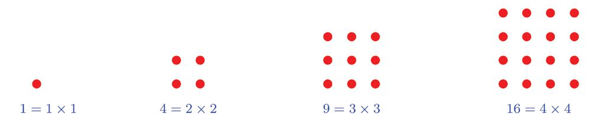
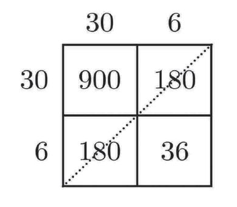
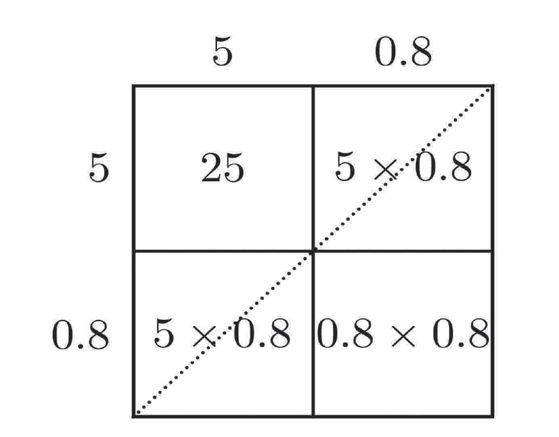
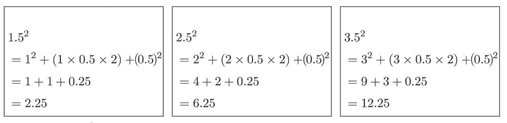

Figure fig_ch01_p007_01 (Page 7) 
Figure fig_ch01_p007_02 (Page 7)
1
വർഗങ്ങൾ
പൂർണ്ണവർഗങ്ങൾ
ഈ സംഖ്യാക്രമം നോോക്കൂ:
1, 4, 9, 16, ...
എന്താണ് ഈ സംഖ്യയകളുടെ സവിശേഷത ?
ഇത്തരം സംഖ്യയകൾ അഞ്ചാം ക്ലാസിൽ പരിചയപ്പെട്ടത് ഓർമ്മയുണ്ടോോ ? (ഗുണനരീതികൾ
എന്ന പാഠത്തിലെ സമചതുരസംഖ്യയകൾ എന്ന ഭാഗം).
ഇവയെ മറ്റൊൊരുരീതിയിൽ എഴുതാമെന്ന് ഏഴാം ക്ലാസിൽ കണ്ടല്ലോോ (ആവർത്തനഗുണനം
എന്ന പാഠം).
1 = 12
4 = 22
9 = 32
16 = 42
25 = 52
..................
ഇവയെ 1 ന്റെ വർഗം, 2 ന്റെ വർഗം, 3 ന്റെ വർഗം, എന്നിങ്ങനെയാണ് പറയുന്നതെന്നും
കണ്ടു (ഏഴാം ക്ലാസിലെ സമചതുരങ്ങളുംം മട്ടത്രികോോണങ്ങളുംം എന്ന പാഠത്തിലെ സമചതുര
പ്പരപ്പ് എന്ന ഭാഗം). ഒരു ഭിന്നസംഖ്യയയെ അതുകൊൊണ്ടുതന്നെ ഗുണിച്ചു കിട്ടുന്നതിനെയും
വർഗം എന്നുതന്നെയാണ് പറയുന്നത്. ഉദാഹരണമായി,
1 1
1
1 m2 1 #
=
=
c
ന്റെ
വർഗം
=
2 2 4
2
2
Figure fig_ch01_p008_01 (Page 8) Figure fig_ch01_p008_02 (Page 8)
VIII ഗണിതം ഭാഗം - I
1, 2, 3, ... എന്നീ എണ്ണൽസംഖ്യയകളുടെ വർഗങ്ങളായ 1, 4, 9, ... എന്നീ സംഖ്യയകളെ പൂർണ്ണ
വർഗങ്ങൾ (Perfect squares) എന്നാണ് പറയുന്നത്.
അപ്പോോൾ തുടക്കത്തിൽ പറഞ്ഞ സംഖ്യയകൾ ആദ്യയത്തെ നാലു പൂർണ്ണവർഗങ്ങളാണ്.
10 ന്റെ വർഗം കണക്കാക്കാൻ വിഷമമില്ല:
102 = 10 × 10 = 100
തുടർന്നുള്ള സംഖ്യയകളുടെ വർഗങ്ങളോോ ?
അഞ്ചാം ക്ലാസിൽ രണ്ടക്കസംഖ്യയകൾ ഗുണിച്ചത് എങ്ങനെയാണ് ? (ഗുണനരീതികൾ എന്ന
പാഠത്തിലെ ചതുരഗുണനം എന്ന ഭാഗം).
8
Figure fig_ch01_p009_01 (Page 9) Figure fig_ch01_p009_02 (Page 9)
വർഗങ്ങൾ
ഇവയിലെല്ലാം കളങ്ങളിലെ സംഖ്യയകൾ വിലങ്ങനെയും കുത്തനെയും കൂട്ടുന്നതിനു പകരം,
കോോണോോടുകോോൺ ആയാലോോ ?
ഈ കൂട്ടലുകൾ ഇങ്ങനെ എഴുതാം:
11 × 11 = 100 + (10 + 10) + 1
12 × 12 = 100 + (20 + 20) + 4
13 × 13 = 100 + (30 + 30) + 9
ഇത് ഇങ്ങനെയും എഴുതാമല്ലോോ;
112 = 102 + (10 × 2) + 12
122 = 102 + (20 × 2) + 22
132 = 102 + (30 × 2) + 32
ഇനി ഇതുപോോലെ 14 ന്റെയും 15 ന്റെയും വർഗം (കളങ്ങൾ വരയ്ക്കാതെ തന്നെ) കണക്കാക്കി
ക്കൂടേ ?
142 = 102 + (40 × 2) + 42
= 100 + 80 + 16
= 196
152 = 102 + (50 × 2) + 52
= 100 + 100 + 25
= 225
16, 17, 18, 19 എന്നീ സംഖ്യയകളുടെ വർഗങ്ങളുംം ഇതുപോോലെ കണക്കാക്കി നോോക്കൂ.
തുടർന്ന് 20 ന്റെ വർഗം കണക്കാക്കാൻ വിഷമമില്ല:
202 = 20 × 20
= (2 × 10) × (2 × 10)
= 2 × 2 × 10 × 10
= 400
9
Figure fig_ch01_p010_01 (Page 10) Figure fig_ch01_p010_02 (Page 10) 
Figure fig_ch01_p010_03 (Page 10)
VIII ഗണിതം ഭാഗം - I
21, 22, 23 എന്നിവയുടെ വർഗങ്ങൾ, നേരത്തെ ചെയ്തതുപോോലെ, ആദ്യംം കളം വരച്ച് ചെയ്തു
നോോക്കാം:
കൂട്ടലുകൾ ഇങ്ങനെ എഴുതാം:
21 × 21 = 400 + (20 + 20) + 1 = 441
22 × 22 = 400 + (40 + 40) + 4 = 484
23 × 23 = 400 + (60 + 60) + 9 = 529
ഇത് ഇങ്ങനെയും എഴുതാമല്ലോോ;
212 = 202 + (20 × 2) + 12
222 = 202 + (40 × 2) + 22
232 = 202 + (60 × 2) + 32
ഇതിൽ 20, 40, 60 എന്നീ സംഖ്യയകൾ കിട്ടിയത് എങ്ങനെയാണ് ?
212 = 202 + (20 × 1 × 2) + 12
222 = 202 + (20 × 2 × 2) + 22
232 = 202 + (20 × 3 × 2) + 32
ഇനി ഈ രീതിയിൽ 24 ന്റെ വർഗവും കണക്കാക്കാമല്ലോോ;
242 = 202 + (20 × 4 × 2) + 42
= 400 + 160 + 16
= 576
ഇതുപോോലെ 36 ന്റെ വർഗം കണക്കാക്കാമോോ ?
362 = 302 + (30 × 6 × 2) + 62
= 900 + 360 + 36
= 1296
10
Figure fig_ch01_p011_01 (Page 11) Figure fig_ch01_p011_02 (Page 11) Figure fig_ch01_p011_03 (Page 11)
വർഗങ്ങൾ
ഏതു രണ്ടക്ക സംഖ്യയയുടെയും വർഗം, കളം വരയ്ക്കാതെ
മൂന്നക്കസംഖ്യയകൾ
തന്നെ, ഇതുപോോലെ കണക്കാക്കാമല്ലോോ.
2
436 കണക്കാക്കുന്നതെങ്ങനെ ?
ആദ്യംം 362 കണക്കാക്കുക:
ഉദാഹരണമായി, 792 നോോക്കാം:
792 = 702 + (70 × 9 × 2) + 92
= 4900+ 1260 +81
362 = 302 + (30 × 6 × 2) + 62
= 900 + 360 + 36
= 1296
ഇനി 4362 കളം വരച്ചു കണക്കാക്കാമല്ലോോ
= 6241
ചുവടെപ്പറയുന്ന വർഗങ്ങൾ കണക്കാക്കുക.
(i) 642
(ii) 352
(iii) 472
(iv) 532
(v) 882
ദശാംശവർഗങ്ങൾ
അപ്പോോൾ
ഈ കണക്കുനോോക്കൂ:
4362 = 4002 + (400 × 36 × 2) + 362
വശങ്ങളുടെയെല്ലാം നീളം 3.7 മീറ്ററായ സമചതുരത്തിന്റെ
പരപ്പളവ് എത്രയാണ് ?
= 160000 + 28800 + 1296
= 190096
ഇവിടെ കണക്കാക്കേണ്ടത്, 3.7 × 3.7 ആണല്ലോോ.
ഇത്തരം ഗുണനങ്ങൾ ഏഴാം ക്ലാസിൽ ചെയ്തത് ഓർമ്മയില്ലേ ? (ദശാംശരീതികൾ എന്ന
പാഠത്തിലെ ദശാംശഗുണനം എന്ന ഭാഗം).
37 # 37 = 372
3.72 = 10
10 100
ഇനി നേരത്തെ ചെയ്തതുപോോലെ 372 കണക്കാക്കാം:
372 = 302 + (30 × 7 × 2) + 72
= 900 + 420 + 49
= 1369
അപ്പോോൾ
372 1369
=
3.72 = =
100 100 13.69
സമചതുരത്തിന്റെ പരപ്പളവ്, 13.69 ചതുരശ്രമീറ്റർ.
11
Figure fig_ch01_p012_01 (Page 12) Figure fig_ch01_p012_02 (Page 12) Figure fig_ch01_p012_03 (Page 12) Figure fig_ch01_p012_04 (Page 12)
VIII ഗണിതം ഭാഗം - I
ഭിന്നരൂപത്തിലേക്ക് മാറ്റാതെ തന്നെ ഇതു ചെയ്യാം. അതിന് ആദ്യംം ഒരു ചിത്രം വരയ്ക്കാം:
വശങ്ങളെയെല്ലാം 3 മീറ്ററുംം, 0.7 മീറ്ററുംം ആയി മുറിച്ചാലോോ ?
സമചതുരത്തിന്റെ നാലു ഭാഗത്തിന്റേയും പരപ്പളവ് വെവ്വേറെ കണക്കാക്കാം:
ഇവയെല്ലാം കൂട്ടിയാൽ മൊൊത്തം പരപ്പളവ് കിട്ടുമല്ലോോ:
3.72 = 9 + (3 × 0.7 × 2) + (0.7 × 0.7)
= 9 + 4.2 + 0.49
= 13.69 ചതുരശ്രമീറ്റർ.
12
Figure fig_ch01_p013_01 (Page 13) Figure fig_ch01_p013_02 (Page 13) 
Figure fig_ch01_p013_03 (Page 13) Figure fig_ch01_p013_04 (Page 13)
വർഗങ്ങൾ
അപ്പോോൾ എണ്ണൽസംഖ്യയകളുടെ വർഗം കളം വരച്ചു കണക്കാക്കിയതുപോോലെ ഈ വർഗവും
കണക്കാക്കാം:
3.72 = 32 + (3 × 0.7 × 2) + (0.7)2
= 9 + 4.2 + 0.49
= 13.69
ചിത്രം വരയ്ക്കാതെ, കളങ്ങൾ മാത്രം വരച്ച് 5.82 കണക്കാക്കാമല്ലോോ:
5.82 = 52 + (5 × 0.8 × 2) + (0.8)2
= 25 + 8 + 0.64
= 33.64
ഇനി കളങ്ങൾ വരയ്ക്കാതെ ഇതുപോോലെയുള്ള വർഗങ്ങൾ കണക്കാക്കാം.
ഉദാഹരണമായി, 13.92 കണക്കാക്കാം.
ആദ്യംം നേരത്തെ ചെയ്തതുപോോലെ 132 ഇങ്ങനെ കണ്ടുപിടിക്കാം:
133 = 102 + (10 × 3 × 2) + 32
= 100 + 60 + 9
= 169
ഇനി ഇപ്പോോൾ ചെയ്തതുപോോലെ 13.92 കണ്ടുപിടിക്കാം:
13.92 = 132 + (13 × 0.9 × 2) + (0.9)2
= 169 + 23.4 + 0.81
= 193.21
(1) ചുവടെപ്പറയുന്ന സംഖ്യയകളുടെ വർഗം കണക്കാക്കുക.
(i) 2.3
(ii) 8.7
(iii) 10.1
(iv) 12.5
(v) 15.7
13
Figure fig_ch01_p014_01 (Page 14) Figure fig_ch01_p014_02 (Page 14) 
Figure fig_ch01_p014_03 (Page 14)
VIII ഗണിതം ഭാഗം - I
(1) ഈ കണക്കുകൾ നോോക്കുക:
4.52 കണക്കാക്കാമോോ ?
ദശാംശഭാഗം 0.5 ആയ കൂടുതൽ സംഖ്യയകൾ എടുത്ത് അവയുടെ വർഗങ്ങൾ കണക്കാ
ക്കിനോോക്കൂ. ദശാംശഭാഗം 0.5 ആയ സംഖ്യയകളുടെ വർഗം കണക്കാക്കാൻ എന്തെങ്കിലും
എളുപ്പവഴി കണ്ടെത്താമോോ ?
(2) ഈ കണക്കുകൾ നോോക്കുക:
1.252 = 12 + (1 × 0.25 × 2) + (0.25)2 = 1 + 0.5 + 0.0625 = 1.5625
2.252 = 22 + (2 × 0.25 × 2) + (0.25)2 = 4 + 1 + 0.0625
= 5.0625
3.252 = 32 + (3 × 0.25 × 2) + (0.25)2 = 9 +1.5 + 0.0625 = 10.5625
4.252 = 42 + (4 × 0.25 × 2) + (0.25)2 = 16 + 2 + 0.0625 = 18.0625
ഇതുപോോലെ, ദശാംശഭാഗം 0.25 ആയ മറ്റു ചില സംഖ്യയകളുടെ വർഗങ്ങൾ കണ
ക്കാക്കുക. ഇത്തരം സംഖ്യയകളുടെ വർഗം കണ്ടുപിടിക്കാൻ പൊൊതുവായ എന്തെങ്കിലും
മാർഗമുണ്ടോോ ?
14